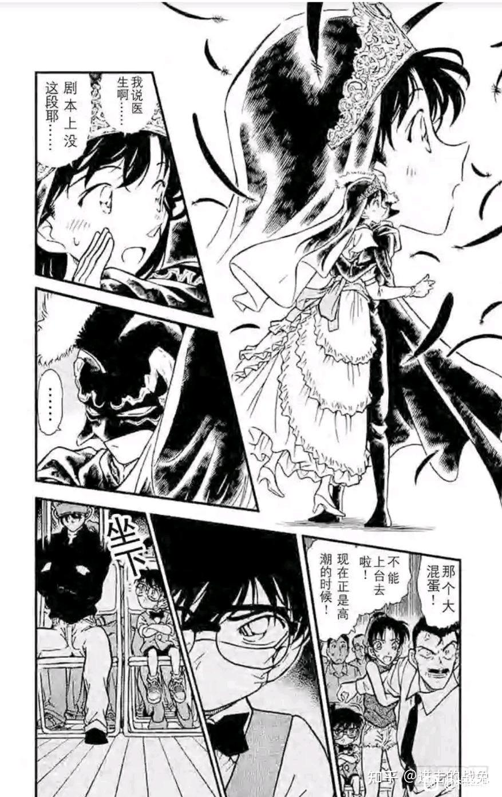
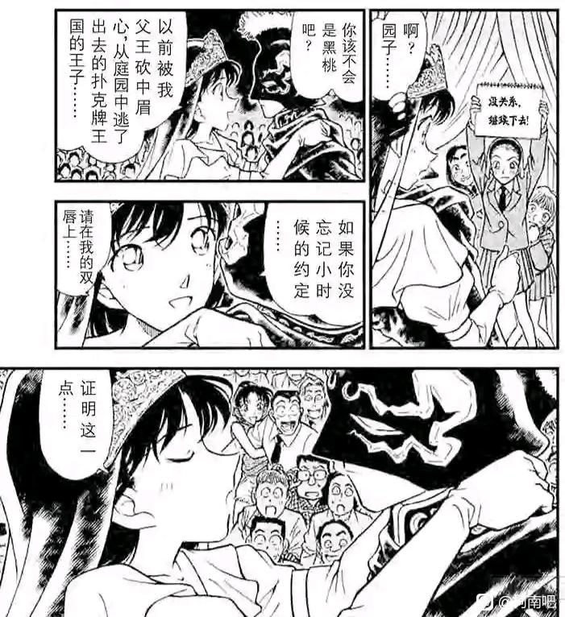
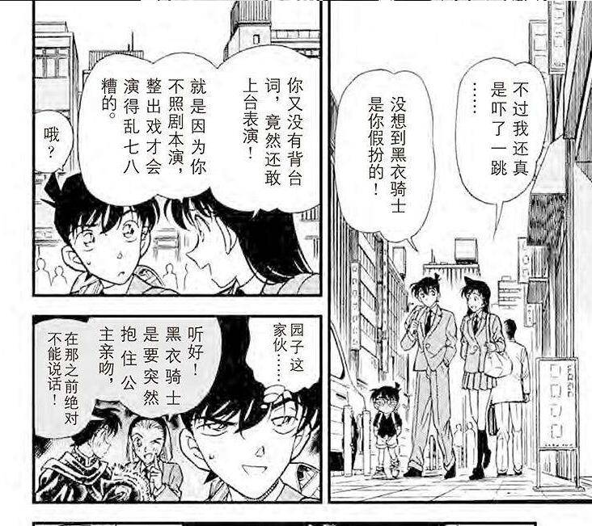
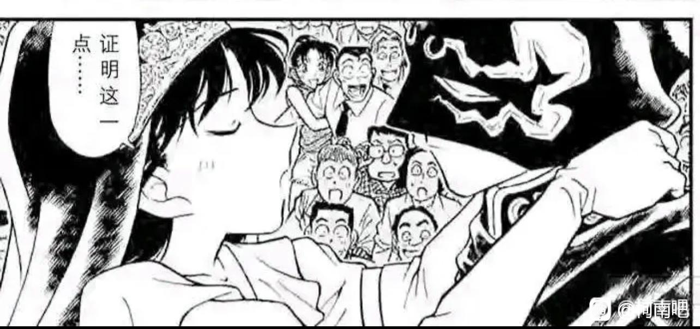

在尖叫声响起的前一秒
新一视角：
好消息：我和喜欢的人就要亲上了。
坏消息：但是她把我当成了别的男人。
更坏的消息：并且她毫无抗拒。
灰原视角：
我在看着我喜欢的男生和别的女生打啵。
而且还是我亲手提供的药让他可以切号跟对方打啵。
兰姐视角：
我和另一个男人要打啵了。我喜欢的男生就在台下看着我们。
新一视角：
好消息：我和喜欢的人就要亲上了。
坏消息：但是她把我当成了别的男人。
更坏的消息：并且她毫无抗拒。
灰原视角：
我在看着我喜欢的男生和别的女生打啵。
而且还是我亲手提供的药让他可以切号跟对方打啵。
兰姐视角：
我和另一个男人要打啵了。我喜欢的男生就在台下看着我们。


等会，再捋一下。
“柯南”真实视角和兰姐认为的柯南视角不谋而合。
灰原视角不知道兰姐的“医生？剧本不是这样的？”所以并不知道新一视角。
新一听到这句就能明白兰姐视角所以我想不通他接下来在米花饭店怎么还愧疚上了。
“柯南”真实视角和兰姐认为的柯南视角不谋而合。
灰原视角不知道兰姐的“医生？剧本不是这样的？”所以并不知道新一视角。
新一听到这句就能明白兰姐视角所以我想不通他接下来在米花饭店怎么还愧疚上了。
2023-10-24 08:15 | 贴吧用户_Q57Pt88:他习惯了永远考虑毛利兰的感受而忽略自己的，这是十几年青梅竹马养成的习惯，其实也不能怪他。2023-10-24 10:17 | 贴吧用户_0bDS2EM:灰原应该知道的；毕竟说好的“我是工藤新一，这是江户川柯南弟弟；我走了”；但是出现在旁边的是服部平次；应该大致推测出来了的2023-10-24 11:15 | 暗蓝heart:新一能明白兰姐视角，但他想的是：我再不娶表白，兰恐怕就要跟别人跑了。所以他急着去约她，想赶快绑定关系（和死罗神后的兰姐一样）。愧疚还是因为新一没能完成“马上就回来”的承诺。2023-10-24 12:27 | 仓樱俳子º:出轨研究专家错过了一场发生在自己面前的精神出轨实录
他愧疚的是小兰哭了和等的辛苦这种话。
哀当时视角就算不知道小兰的话，事后也从小兰嘴里知道了。她自己说不知道黑衣骑士是工藤新一，居然不背台词上台让演出乱七八糟，怎么可能不知道小兰想法。
而且对哀来说重要的不是毛利兰想法，是工藤新一的想法，她没法确认新一是不是就是为了吻而扮的黑衣骑士，这个才是关键。事情最后她也只知道新一没有表白。
从园子话来说新一不知道会有吻戏，他目的确实不是上去亲人，不管这个扮骑士有没有和哀通过气，这个吻戏发生后她才会觉得新一可能就是想去亲人。
哀当时视角就算不知道小兰的话，事后也从小兰嘴里知道了。她自己说不知道黑衣骑士是工藤新一，居然不背台词上台让演出乱七八糟，怎么可能不知道小兰想法。
而且对哀来说重要的不是毛利兰想法，是工藤新一的想法，她没法确认新一是不是就是为了吻而扮的黑衣骑士，这个才是关键。事情最后她也只知道新一没有表白。
从园子话来说新一不知道会有吻戏，他目的确实不是上去亲人，不管这个扮骑士有没有和哀通过气，这个吻戏发生后她才会觉得新一可能就是想去亲人。

2023-10-24 07:45 | Chaos🌐🌸:回复 Chaos🌐🌸 :别说这戏柯南一开始从小五郎那知道后面有吻戏什么的，他不知道自己上场时的台词，说明他也不知道自己上场时处于剧情哪个阶段，你总不能说他能秒记所有剧情演完全场吧？他只知道园子说了句上去亲就行。2023-10-24 07:53 | Chaos🌐🌸:回复 Chaos🌐🌸 :还有就是新一视角听到小兰说剧情不对，他应该是意识到被园子骗了，剧情不是那样，小兰没有质疑表演出错的“新出”是否仍旧会和预定的一样不是真亲才是他眼里兰不对的地方2023-10-24 07:56 | Chaos🌐🌸:回看了剧情，新一上场是在剧本开篇不久，那个吻就是园子加戏，剧本里没这段，小兰自己说没有拥抱这种东西2023-10-24 09:15 | 贴吧用户_0895PJD:感觉应该是园子知道是新一才搞的鬼2023-10-24 10:26 | 贴吧用户_0bDS2EM:虽然但是也没有乱七八糟吧，按照剧本那时也就骑士接吻露脸，或者说是露脸接吻的2023-10-24 10:27 | 贴吧用户_0bDS2EM:回复 贴吧用户_0895PJD :园子就是看着没有头盔的新一的2023-10-24 10:35 | 贴吧用户_0895PJD:回复 贴吧用户_0bDS2EM :园子知道那就是新一，所以才放心这样搞2023-10-24 10:43 | 贴吧用户_0bDS2EM:回复 贴吧用户_0895PJD :但是小兰自动配合突然改剧本的“新出医生”和起哄的园子等人；以及当着“柯南（新一）”的面和别人kiss；然后回看是怎么面对新一的“女朋友”赤木量子的2023-10-24 11:40 | Chaos🌐🌸:回复 贴吧用户_0bDS2EM :是因为黑衣骑士没按剧本走当时搞得她尴尬了，知道这是新一后才有了这个抱怨2023-10-24 11:43 | 贴吧用户_0bDS2EM:回复 Chaos🌐🌸 :有什么尴尬？不就是以为自己当着新一（柯南）的面和别人（新出医生）接吻嘛；自己翻新一“女朋友”赤木量子家就不尴尬了？2023-10-24 11:44 | Chaos🌐🌸:回复 贴吧用户_0bDS2EM :还有原剧本吻戏位置并不确定，只知道是在排练到摘头套后的，而且这戏应该是分阶段有幕的划分，总不可能新一和二愣子一样没背过台词上去演全部剧情吧2023-10-24 11:46 | 贴吧用户_0bDS2EM:回复 Chaos🌐🌸 :排练时说了“做个样子”；也就是只要随便借位就可以了2023-10-24 11:49 | Chaos🌐🌸:回复 贴吧用户_0bDS2EM :不要老把思路转向恋爱话题，这人抱怨的核心是戏乱了，是她自己觉得因为新一不知道台词戏演的不好，观众会看笑话，自己练习也白浪费了，很尴尬，但观众都以为这是剧本内容2023-10-24 11:50 | Chaos🌐🌸:回复 贴吧用户_0bDS2EM :是说吻戏在全剧里是不是紧挨着摘头套发生的2023-10-24 11:51 | Chaos🌐🌸:回复 贴吧用户_0bDS2EM :就一开始出现那个拥抱时，小兰脸上挂了很明显的汗和脸红，那这汗除了尴尬黑衣骑士瞎搞外还有什么解释2023-10-24 11:54 | 贴吧用户_0bDS2EM:回复 Chaos🌐🌸 :观众看笑话就看呗；初中时新一就没有担心餐厅的人笑他这个无神论者；反而小兰觉得新一这个无神论者被嘲笑了2023-10-24 12:00 | Chaos🌐🌸:回复 贴吧用户_0bDS2EM :你是不是怼兰怼魔怔了啊，我这说的很有问题吗……2023-10-30 02:30 | Christine9512:我已经懵了所以新一上去是不是为了亲兰2023-10-30 03:13 | Chaos🌐🌸:回复 Christine9512 :最开始想上去肯定不是为了这个的，一开始他变回去和小兰见面的目的仅仅是打消小兰对柯南=新一的怀疑2023-10-30 03:19 | Christine9512:回复 Chaos🌐🌸 :原来如此！我丢，那我误会了呀以前看动画版
什么地狱绘图
兰兰：既要追求刺激，那就贯彻到底咯，
我不仅当新一面和别的男人接吻，还要当新一面，和别的男人鸳鸯戏水。
反正我又不是故意，哭一哭，委屈表情一露，大家就当没事发生
我不仅当新一面和别的男人接吻，还要当新一面，和别的男人鸳鸯戏水。
反正我又不是故意，哭一哭，委屈表情一露，大家就当没事发生
 青山这该死的三选一强迫症
青山这该死的三选一强迫症A、白皮口罩柯南
B、疑似新一的大哥哥
C、黑衣骑士
哪个是真正的工藤新一
2023-10-30 05:51 | Pellow🐼:当年看连载的估计也很疑惑吧。不过后一批名柯粉 已知剧透才去的，所以没刺激感
这里画面挺意味深长的，眼神被遮住了，即使园子事先通气加戏了，新一没有张嘴，并不迫不及待去亲，而像是若有所思~

2023-10-24 10:50 | 阿v恶露天:虽然没有眼神，不过面具上的空洞仿佛什么都没说，又仿佛什么都说了2023-10-24 10:54 | 夕霧_軒:回复 阿v恶露天 :万一是过度解读呢2023-10-24 10:59 | 阿v恶露天:回复 夕霧_軒 :过度解读又怎样，本来就是吧友们讨论下，反正我没有宣传的想法，毕竟一切要看后续更新，所以，朋友，享受解读的过程2023-10-24 11:01 | 夕霧_軒:回复 阿v恶露天 :是的，只要有理有据，真的很享受过程~

我觉得先不急，等着青山让工藤意识回想起这点，毕竟这明显是他故意埋的雷。
其实酒店那一幕简直是典型的pua，即近在眼前的愧疚让人忽略掉对方的错误和不合理，只不过不是兰主动谋划的，但是效果是差不多的，只能说柯南的责任心太强了，也不会有责怪别人的想法。我觉得比起愧疚更让人搞不懂的是他都知道兰明知道“新一”在台下还要跟别的男人亲为啥还要约她去酒店，还搞得那么让人误会，要是没有去酒店这一遭那因为回不来而愧疚这一幕从根源上就不会出现
2023-10-24 10:16 | 西辽白雪:而且现在回看感觉整个都不能细想啊，新一吃饭到半道跑走办案结果一去不回，那么要么他的案子非常紧急难办，要么他不喜欢兰到可以随便离开2023-10-24 10:16 | 西辽白雪:但是新一不是那种不礼貌的人，也不是乱花钱为了不喜欢的女生就拿老爸金卡的人，这顿饭也是新一出钱，他俩还啥关系都没确定，为啥就能完全沉浸在自己苦等的悲伤中啊，就不担心一下新一到底在办啥案子能在这种重要时候离开吗？
当时没多想，现在看漫画后从第一话开始全是雷，小兰在明知道“新一”在下面的情况下仍然亲吻，不知道避嫌吗
她没认出来当时觉得合理，现在对照下和叶秒认且没任何提醒下直接秒杀兰了。而且第一集她就没认出来小时候样子所谓的青梅很尴尬。
所以这个剧本原来的部分有没有吻戏啊，看小兰好像不知道内幕但依然想要吻的样子，应该是原本就有这部分的戏
2023-10-25 04:46 | 贴吧用户_aKQbVSX:有的，剧本里有吻戏，不过一开始骑士由园子扮演，后来园子不能上场，临时换成了新出，然后在又被悄咪咪地换成了新一

危命复活哀还没对柯南产生感情吧
2023-10-24 22:17 | 小闷瓶子:产生了2023-10-24 23:56 | 暗蓝heart:不然为什么送七朵玫瑰？为什么在被问“你为什么为我做这么多”后脸红？ 哀对柯产生感情在古堡就有端倪了2023-10-25 00:03 | 暗蓝heart:回复 极玹罪恶 :古堡的时侯，哀的眼睛一直看着柯，一些画面是和哀无关的，但73依然不辞辛苦地画了个哀看着柯，算是“如果一个女孩总是盯着......喜欢上他了”的早期伏笔2023-10-25 00:03 | 极玹罪恶:回复 暗蓝heart :可能有，但仅仅只是对这个男孩有兴趣的程度，我自认为真有感情还得是满月2023-10-25 00:06 | 暗蓝heart:回复 极玹罪恶 :为什么？2023-10-25 00:17 | 极玹罪恶:回复 暗蓝heart :我自认为是神秘乘客那里，小柯对哀的付出才产生感情，危命在200集，神秘乘客在250这样，当然，如果抛去原创集数，那确实时间线也不是那么严苛2023-10-25 00:22 | 暗蓝heart:回复 极玹罪恶 :7玫瑰已经是作者把答案呼你脸上了2023-10-25 05:31 | 唯一的届不到💖:回复 极玹罪恶 :再会篇的时候，小哀面对柯南拯救会心一笑，那一刻就已经沦陷了。心里肯定os：他是那么让人心安2023-10-30 05:55 | Pellow🐼:部分哀米的观点，哀对柯南从感兴趣到喜欢，最晚不下神秘乘客 公交挟持案（小红帽），最早不下应该是 黑衣组织再会篇，哀以为新一要赶走她，结果是反向留下保护。如果试药论未来存在，小哀对新一喜欢早到蓝色古堡2023-10-30 05:56 | Pellow🐼:详情参考现在m26美丽的鳍官方mv五个哀对柯南的美颜滤镜2023-11-03 19:13 | 贴吧用户_76WUK1D:危命篇最后一格你看哀有多开心，就有多喜欢。
没什么想法，就是感觉蜗壳头上好绿
虽然但是，如果剧本有吻戏且不能改剧本的前提下，该怎么避嫌呢？如果是在三次元，演员好像只能牺牲自己的准则，按照剧本要求来演吧？借位的话不会很明显吗？还有在演出中吻另一个演员，这个吻应该更多是工作性质，而不是情感性质(渣)。只针对这一个情节，大家的想法是不是有点过于保守了?
2023-10-30 03:24 | 愛的幻影:是啊，这个舞台剧工藤扮演的新出医生什么台词都没有，全靠大家临场随机应变，但是吻戏就不能改动是吧？2023-10-30 03:36 | 呱膜:2023-10-30 03:42 | crjiaqiz:啥演员啊，这种学园祭性质的班级活动怎么连工作性质都来了，主演反感哪怕不吻又能怎么样
回复 愛的幻影 :毕竟也要看圆子大导演的意思[捂脸]2023-10-31 03:55 | crjiaqiz:回复 呱膜 :之前的回复被删了。。。再回一次2023-11-01 19:00 | 福尔摩斯的推理:我也一直这么说，但一这么说就被怼，哪怕我在别的地方花式黑兰挺哀都没用2023-11-01 19:07 | 福尔摩斯的推理:自求多福吧
“新出医生”突然改了剧本，毛利兰能咋办？是我我也会配合，横不能把剧给砸了吧？一般学生上舞台演舞台剧，能把剧本顺利演完都紧张死了，更何况毛利兰根本就不是什么有主见的人，难道指望她临场现编一个剧情给圆过去？2023-11-01 19:08 | 福尔摩斯的推理:我一直觉得别的名场面咋喷毛利兰都不为过，但这个剧情确实过了。动画版梁祝也有这类学生演出上祝英台突然擅自改剧情亲梁山伯的剧情，梁山伯当时还以为祝英台是男生在舞台上只是男扮女装呢，该亲不也亲了？当时他们的老师反应跟毛利大叔一模一样。2023-11-02 06:01 | crjiaqiz:回复 福尔摩斯的推理 :握手！虽然剧情依旧炸裂，但是其他擦擦在这个地方都的确思想变得过于保守了。。 (其实我想到mll如果改一点台词，把“在我双唇上证明这一点”改成“在额头/脸颊/手背上”都能规避雷点，但至于她有没有这个随机应变能力就不知道了。。)

可怜的剧本君真的你我多少都有过推卸责任的经历，骗别人前先骗自己不好吧
真的你我多少都有过推卸责任的经历，骗别人前先骗自己不好吧2023-10-30 03:05 | 策天凤♬:这个我们俗语叫借坡下驴
73：哀殿不悦
这个地方明显是大雷，因为再往前几页里，73安排灰原扮演的柯南，完美的在毛利兰面前表现了柯南的醋意，
但是舞台剧还是让毛利兰和扮演新出医生的工藤，在扮演工藤（毛利兰视角下的柯南）的灰原 面前，差点吻上了，
说明73还是挺好这口的
但是舞台剧还是让毛利兰和扮演新出医生的工藤，在扮演工藤（毛利兰视角下的柯南）的灰原 面前，差点吻上了，
说明73还是挺好这口的
小时候看到这里就觉得好怪，小兰不是认为那个是新出医生吗，还要亲上去，从那时起就不怎么喜欢小兰了，然后很多年没看，今年再看的时候知道了m23……更讨厌了
我一直觉得别的名场面咋喷毛利兰都不为过，但这个剧情确实过了。动画版梁祝也有这类学生演出上祝英台突然擅自改剧情亲梁山伯的剧情，梁山伯当时还以为祝英台是男生呢，在舞台上是男扮女装呢，该亲不也亲了？当时他们的老师反应跟毛利大叔一模一样。
2023-11-03 21:59 | 小幽灵5555:不一样吧，如果黑衣骑士新一和兰姐是梁祝的话，哪底下被兰姐以为是新一的小哀又是谁？祝英台明面上的爱人梁山仲？还是真梁山伯？（）换句话说，祝英台当着她以为是自己爱人梁山伯的面，在舞台上去和一个和自己没什么关系的人亲亲？如果台上是梁祝，那台下被以为的新一，岂不是马文才？
这里最大的问题就是台下的柯南（哀酱），毛利兰这里的认知是柯南就是新一，但还是当着新一的面准备和新出医生（原黑衣骑士）接吻，这个场景真的很地狱，尤其是台上的新一
这个场景我觉得最地狱的不是兰当着“新一”面吻“新出”，而是跟红修篇一样，嘴都快挨上了，但偏偏就是没亲下去，这次是因为案件，下次是因为药效（？），73就是死活不让他俩接吻
），73就是死活不让他俩接吻